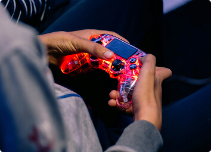

<section class="news" id="news">
	<div class="container">
		<div class="title__wrapper">
			<p class="subtitle">
				<span>News</span>
			</p>
			<h2 class="title">
				These newships allow us to stay at<br> the forefront of technology and trends.
			</h2>
		</div>

		<div class="cards">
			<div class="card__wrapper first">
				<div class="card">
					
				</div>
			</div>
			<div class="card__wrapper second">
				<div class="card">
					<div class="card__date">24/08</div>
					<div class="card__text">
						<h3 class="card__title">The rise of cross-platform play: gaming without boundaries</h3>
						<p class="card__subtitle">Cross-platform gaming is breaking down barriers between consoles, pcs, and mobile
							devices. Explore how this trend is uniting players worldwide and creating a more inclusive gaming
							ecosystem. </p>
					</div>
				</div>
			</div>
			<div class="card__wrapper second">
				<div class="card">
					<div class="card__date">11/08</div>
					<div class="card__text">
						<h3 class="card__title">VR gaming hits new heights with affordable headsets</h3>
						<p class="card__subtitle">Virtual reality is becoming more accessible than ever, thanks to affordable
							headsets like meta quest 3 and playstation vr2. Find out how these advancements are bringing immersive
							gaming experiences to a wider audience.
						</p>
					</div>
				</div>
			</div>
			<div class="card__wrapper second">
				<div class="card">
					<div class="card__date">18/07</div>
					<div class="card__text">
						<h3 class="card__title">The rise of cross-platform play: gaming without boundaries</h3>
						<p class="card__subtitle">From remastered classics to pixel-art indie titles, retro gaming is making a
							comeback. Explore why nostalgia-driven games are capturing the hearts of both older gamers and a new
							generation of players.</p>
					</div>
				</div>
			</div>
		</div>
	</div>
</section>